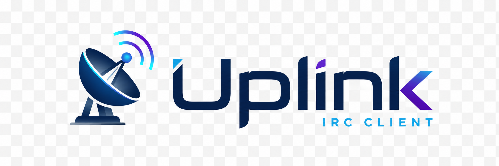

UplinkIRC is a fast, secure, IRCv3-featured IRC client built to run for days. Native Qt6, small footprint, no Electron.
Designed to stay connected and stable for hours or days — a client named for what it does.
Every connection uses TLS via Qt's QSslSocket. Plain IRC is not an option — your connection is encrypted from the first byte.
Built with Qt6 Widgets and C++17. No web runtime, no Electron, no Chromium. Small binary, small RAM footprint.
CAP LS 302 negotiation, message-tags, server-time, multi-prefix, away-notify, batch, and labeled-response — with more on the way.
Catppuccin, Nord, Dracula, Gruvbox, Solarized, Tokyo Night, and dozens more. Switch live from the hamburger menu.
Close the window and keep running in the tray. Unread badge, balloon notifications, and one-click restore.
Connect through ZNC or soju using the password field. PASS is sent before registration — just how bouncers expect it.
Full prefix-rank sorting (~&@%+). Live updates on JOIN, PART, QUIT, NICK, KICK, and MODE. Topic bar shows channel modes.
One readable config file. Multiple servers, per-server channels with keys, UI toggles. Auto-created on first launch with sensible defaults.
Message buffer capped at 2,000 per channel. RAM usage stays flat across long sessions on busy networks.
One codebase, native builds on every major OS. Qt6 handles the platform layer — UplinkIRC stays fast everywhere.
x86_64 & ARM64
Arch, Debian, Fedora, and more
x86_64 & ARM64
Qt6 from ports, no patches needed
Intel & Apple Silicon
.app bundle planned
x86_64 & ARM64
Installer planned
CAP LS 302 — UplinkIRC waits for the server's full capability list before requesting anything, so it never NAKs on unsupported caps.
Beginner-friendly guides with real config examples. Always kept in sync with the current release.
Every config option with full examples. Multi-server, bouncer, themes, and channels.
All slash commands — /join, /part, /nick, /me, /msg, /raw, and more.
Full capability status — active, negotiated, and planned.
Common questions, config mistakes, and platform-specific fixes.
Input, navigation, and interface shortcuts.
What's done, what's in progress, and what's coming next.
Join #uplink on irc.linuxdojo.org:6697 (TLS) for help and development discussion.